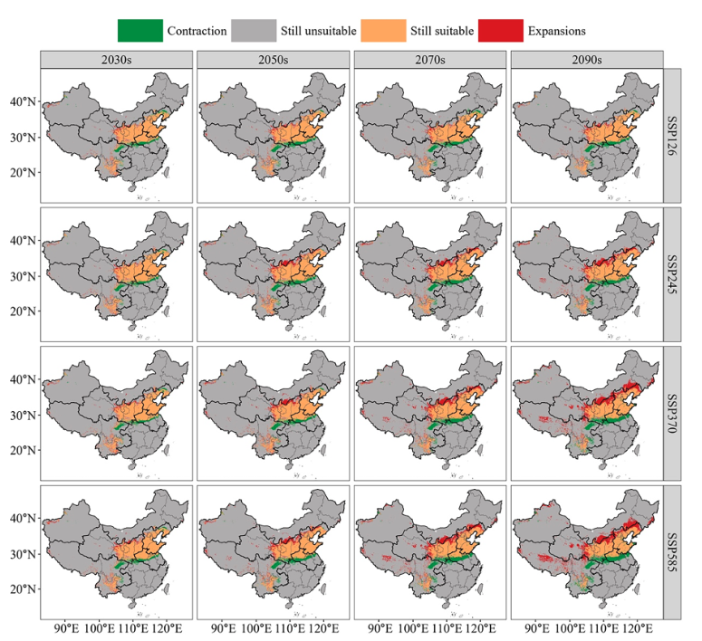
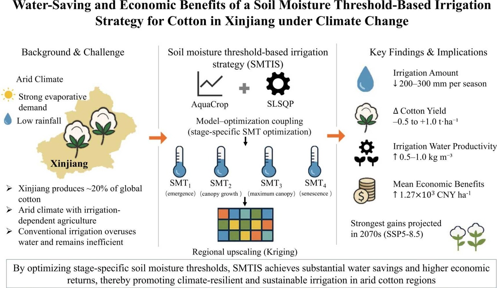
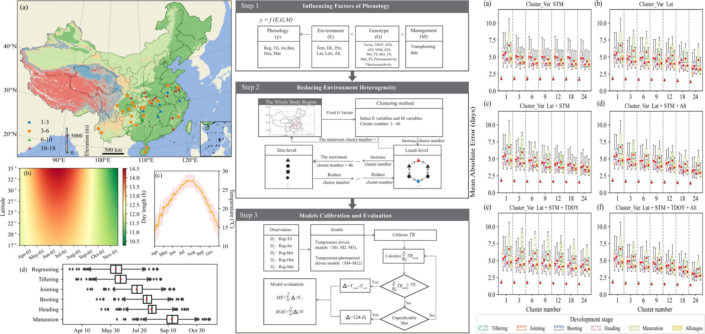

Journal Articles
- Tian, Q., Qu, J., Yin, L., Wei, S., Yan, C., Liang, Z., Chen, B., Yao, L., Fang, H., et al., 2026. SporaScan: cost-effective, high-precision leaf-disc disease severity assessment for grapevine downy mildew. Pest Management Science.
- Chen, B., Yao, L., Liu, Y., Benaly, M. A., Yan, C., Wu, G., Guan, R., Li, Y., Zhang, D., et al., 2026. Water-saving and economic benefits of a soil moisture threshold-based irrigation strategy for cotton in Xinjiang under climate change. European Journal of Agronomy, 178, 128152. DOI
- Chen, B., Zhao, G., Tian, Q., Yao, L., Wu, G., Wang, J., Yu, Q., 2025. Climate-driven shifts in suitable areas of Alternaria leaf blotch (Alternaria mali Roberts) on apples: Projections and uncertainty analysis in China. Agricultural and Forest Meteorology, 364, 110464. DOI
- Chen, B., Zhao, G., Tian, Q., Yao, L., Srivastava, A. K., Chen, S., Yao, N., He, L., et al., 2025. Spatially-Explicitly Predicting Suitability of Three Apple Diseases in China: A Comparative Analysis of Five Species Distribution Models. Journal of Phytopathology, 173 (4), e70123.
- Li, P., He, L., Wang, X., Zhao, M., Li, F., Jin, N., Yao, N., Chen, C., Tian, Q., Chen, B., et al., 2025. The Forecasting Yield of Highland Barley and Wheat by Combining a Crop Model with Different Weather Fusion Methods in the Study of the Northeastern Tibetan Plateau. Atmosphere, 16 (5), 551.
- Tan, J., Zhao, G., Tian, Q., Zheng, L., Kang, X., He, Q., Shi, Y., Chen, B., Wu, D., et al., 2024. Overcoming mechanistic limitations of process-based phenological models: A data clustering method for large-scale applications. Agricultural and Forest Meteorology, 356, 110167. DOI
- Liu, Y., Li, H., Zhu, L., Chen, B., Li, M., He, H., Zhou, H., Wang, Z., Yu, Q., 2024. Revealing Cropping Intensity Dynamics Using High-Resolution Imagery: A Case Study in Shaanxi Province, China. Remote Sensing, 16 (20), 3832.
- Guo, D., Yuan, Y., Zeng, X., Chen, B., Wei, W., Cui, Y., Yuan, M., Sun, L., 2021. 石灰性土壤施用不同磷肥对玉米苗期生长和土壤无机磷组分的影响. 水土保持学报, 35 (4), 243–249.
International Conference
- Wang, M., Yao, L., Chen, B., Xia, Z., Pang, B., He, Z., et al., 2026. MS²-Net: A deep learning framework for high-throughput assessment of wheat emergence-stage plant density using multi-altitude multispectral UAV imagery. EGU26.
- Benaly, M. A., Zhao, G., Kharrou, M. H., Brouziyne, Y., Chen, B., Mamassi, A., et al., 2026. Optimizing maize irrigation and fertilization management with APSIM Next Generation for current and future climate scenarios under semi-arid conditions in Morocco. EGU26.
- Chen, B., Zhao, G., Yao, L., Yu, Q., 2025. Sustainable Irrigation Strategies for Cotton Production in Xinjiang, China: Balancing Yield, Profitability, and Sustainability under Climate Change. EGU General Assembly Conference Abstracts, EGU25-12369.
Featured Publications

Climate-driven shifts in suitable areas of Alternaria leaf blotch (Alternaria mali Roberts) on apples: Projections and uncertainty analysis in China Bin Chen, Gang Zhao, Qi Tian, Lin Yao, Genghong Wu, Jing Wang, Qiang Yu Agricultural and Forest Meteorology, 364, 110464
Water-saving and economic benefits of a soil moisture threshold-based irrigation strategy for cotton in Xinjiang under climate change Bin Chen, Lin Yao, Yan Liu, Mohamed Amine Benaly, Changqing Yan, Genghong Wu, et al. European Journal of Agronomy, 178, 128152
Overcoming mechanistic limitations of process-based phenological models: A data clustering method for large-scale applications Jing Tan, Gang Zhao, Qi Tian, Lei Zheng, ..., Bin Chen Agricultural and Forest Meteorology, 356, 110167